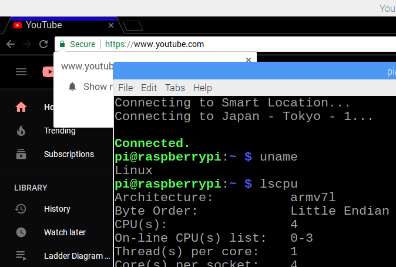

在树莓派(RaspberryPi)上使用
ExpressVPN翻墙(科学上网)
引子
网上的树莓派翻墙的教程，绝大多数都是用SS，
因为很多VPN软件都没有树莓派的armvf架构版。
曾经我也一步一步地在树莓派安装shadowSocks，
找一些「免费公共」的SS节点，配置一下，结果失败了。
某日我无意中浏览ExpressVPN的产品中，无意中发现
这个VPN大厂居然有「树莓派版本」
下载
ExpressVPN官网，如果不是付费账号登陆
点来点去都需要你给钱order一份才能跳转到下载页面。
万般无奈下，只好联系ExpressVPN在线客服
 如图，提供一个「已付费」的ExpressVPN邮箱账号
客服很热情的给我下载链接
其实你登陆了ExpressVPN后，进入Myaccout主页
点击GetExpressVPN就能看到各个平台的ExpressVPN
如图，提供一个「已付费」的ExpressVPN邮箱账号
客服很热情的给我下载链接
其实你登陆了ExpressVPN后，进入Myaccout主页
点击GetExpressVPN就能看到各个平台的ExpressVPN
 让人惊奇的是，居然有Xbox和PS4(PlayStation版本)
细心一看ExpressVPN支持的平台还真多啊！
让人惊奇的是，居然有Xbox和PS4(PlayStation版本)
细心一看ExpressVPN支持的平台还真多啊！
安装与测试
给树莓派安装ExpressVPN
sudo dpkg -i expressvpn_1.3.2_armhf.deb
然后在terminal里面用expressvpn登陆账号
用的是账号中心里面有个叫activation code(类似于激活码)
最后输入
expressvpn connect
至此express安装，配置，连接都完成了，可以全速翻墙了
附上一张树莓派翻墙上Youtube的图
